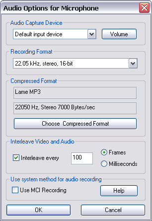

(From the main menu, choose Options->Record audio from microphone)
You can add a soundtrack to your movie by selecting this option. When enabled, CamStudio will record your voice input from the microphone while it is capturing video. You need a sound card with an attached microphone to use this option.
(From the main menu, choose Options->Audio Options->Audio Options for Microphone)

Use this dialog box to set the recording format and compressed format of your audio.
The recording format is the format your soundcard use to record your voice from the microphone. Its main attributes are samples per second (measured in kHz), mono/stereo input, and bits per sample (usually 8 or 16 bit). Larger values for samples per second and bits per sample will result in better recording quality, but at the expense of the movie file size.
This is the format that will be saved with your movie file. You can click on the 'Choose Compressed Format' button to select another compressed format. After recording your movie, CamStudio will attempt to convert your audio from the recording format to the compressed one.
Your choices for the compressed format are determined by the recording format. If you change your recording format, the compressed format will also change automatically.
Interleave your audio and video for smoother playback on a slow device such as CD-ROM. This will also allow better synchronization of your video and sound content. The interleave factor determines the amount of interleaving in your movie. Normally, this value is specified in number of frames. A value of 1 frame will mean full interleave. Larger values will mean less interleaving.
You can also specify the Interleave factor in milliseconds. If you choose to Interleave a movie every 100ms for a movie with a capture rate of 200 frames per second (Capture Frames Every 5 milliseconds), the Interleave factor will be equivalent to Interleave every 20 frames.
Use this to adjust the input volume of your microphone if your recorded audio is barely audible. If CamStudio is unable to locate your volume control, you will need to adjust the volume manually through Start : Programs : Accessories: Entertainment : Volume Control.
Please note that some configurations of the Recording and Compressed format will result in the audio recording becoming choppy or inaudible.
Some sound card disallows your system to record while another application is playing sound. In this case CamStudio will issue an error when you attempt to record with the 'Record Audio' option being enabled.
If you set this checkbox, CamStudio will use certain system commands (MCI commands) to perform the recording of audio from your microphone. This method is more stable and may give better sound quality in some systems.
If you experience low audio quality when recording from CamStudio, but managed to obtain high quality recordings from your system's Sound Recorder, you may want to consider setting this option.
Important
CamStudio will ignore all other settings in the Options for Microphone dialog box (except for the Audio Video Interleave setting) if you choose this setting.
Instead, to adjust the recording source, you will need to set it externally in the Control Panel->Sounds and Audio Device->(Audio Tab)->Default Recording Device (for Windows XP).
If you set the external recording source to a non-soundcard device (e.g webcam microphone), you will need to set it back to your soundcard when you want to record sound from speakers.